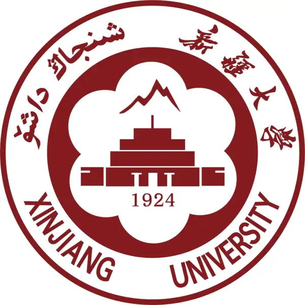

|
Yiquan Wang(王一权)

|
School of Mathematics and System Sciences, Xinjiang University (Urumqi, Xinjiang)
National Base for Research and Teaching Talents in Basic Sciences "Mathematics"
Major in Mathematics and Applied Mathematics
Tsinghua University Tsien Excellence in Engineering Program - Shenzhen X-Institute (Shenzhen, Guangdong)
Zero One Scholar
IEEE Biometrics Council, membership
E-mail: wyqmath@gmail.com
E-mail: ethan@stu.xju.edu.cn
E-mail: wangyiquan@mails.x-institute.edu.cn
Contact/WeChat: 19537838515
Artificial Intelligence
Deep Learning
AI for Science
Bioinformatics
Computational Biology
Mathematical Modeling
Neuroscience
|
个人简介
目前已经发表了10+篇SCI/EI论文，人工智能顶级会议ICLR、ICML会议9篇。在我本科阶段的学习中，我计划按照三个阶段与两条主线进行推进。即假期三个阶段：国内顶尖高校暑校、国内头部企业实习和境外高校暑研的三个阶段推进，努力丰富自己的社会见解，并锻炼个人的认知能力。在学期内两条主线：即在新疆大学本科生课程学习和清华钱班的科研训练(ESRT,ORIC)这两个方面达到学与用的深度融合.
教育经历
本科： 新疆大学 数学与系统科学学院--国家理科基础学科研究和教学人才培养"数学"基地--数学与应用数学专业 , 2023.09-2027.06
联培： 清华大学钱学森班-零一学院 , 2024.06-2027.06
访问学生： 深圳湾实验室-神经疾病研究所-袁文课题组, 2025.07-2025.09 深圳湾实验室-神经疾病研究所-袁文课题组, 2025.07-2025.09
研究经历
我的研究方向是AI for Science，专注于深度学习、生物信息学与数学建模的交叉融合，旨在利用人工智能技术研究疾病的机制。我致力于运用先进的深度学习算法深入分析生物数据中的复杂模式，并将其与生物信息学的洞见及严谨的数学模型相结合，以开发出高效且精确的生物数学模型，最终实现对疾病机制的解析及其风险更早期、更准确的评估与预测。
精选论文
Yiquan Wang.*, Minnuo Cai., Tin-Yeh Huang. AI for disease prediction: Performance insights and key limitations. Journal of Clinical Neuroscience. (First and corresponding author) Yiquan Wang.* Jiaying Wang., Tin-Yeh Huang., et.al. STGCN-LSTM for Olympic Medal Prediction: Dynamic Power Modeling and Causal Policy Optimization. ICML 2025 Workshop. (Co-first and corresponding author) Xu Wang., Yiquan Wang., Tin-Yeh Huang. Crypto-ncRNA: Non-coding RNA (ncRNA) Based Encryption Algorithm. ICLR 2025 Workshop. (Co-first author) Xu Wang., Yiquan Wang.*, Jiazhuo Pan. Digital Art Creation and Copyright Protection in Pollock Style Using GANs, Fractal Analysis, and NFT Generation. ICLR 2025 Workshop. (Co-first and corresponding author) Xu Wang., Yiquan Wang. Yuhua Dong., et.al. Symphony of Fate: Weaving Life through the Music of Amino Acids.ICML 2025 Workshop. (Co-first author) Xu Wang.*, Yiquan Wang. et.al. A Personalized MOOC Learning Group and Course Recommendation Method Based on Graph Neural Network and Social Network Analysis. ICML 2025 Workshop. (Co-first author) Xu Wang., Longji Xu., Yiquan Wang*. et.al. Octopus Inspired Optimization Algorithm: Multi-Level Structures and Parallel Computing Strategies. ICML 2025 Workshop. (Corresponding author) Xu Wang., Fengzhou Wang., Yiquan Wang. Dialogues between adam and eve: exploration of unknown civilization language by llm. ICLR 2025 Workshop. Yiquan Wang.*, Jialin Zhang., Yuhan Chang. A probability prediction model for flood disasters based on Multi-layer Perceptron. 2024 International Conference on Computational Modeling and Applied Mathematics. (CMAM 2024) JPCS. Jiaying Wang., Yiquan Wang.* Multi-stage Crop Planting Strategy Optimisation Model Based on PSO Algorithm. The 3rd International Conference on Electronic Information Technology. (EIT 2024) IEEE. (Corresponding author)
Note: *通讯作者
在Google Scholar的全部文章.
学术参与
Reviewer
NeurIPS 2025 AI for Science Workshop link NeurIPS 2025 MATH-AI Workshop link ICML 2025 Workshop on AI for Math link ICLR 2025 Workshop on AI for Nucleic Acids link ICLR 2025 Workshop: The 1st Workshop on GenAI Watermarking link Mini-Reviews in Medicinal Chemistry link Current Science link F1000 Research link
科研项目
-
2025年大学生创新训练计划(国家级项目；Student Advisor)：拷贝数变异的条件扩散模型:用于阿尔兹海默病风险评估, 2025.4-2026.4
主要内容：本项目旨在将全基因组测序数据中的基因拷贝数变异（Copy Number Variation, CNV）特征与代谢指标等多维临床数据相融合，并借助扩散模型（Diffusion Model）在处理高维模拟数据和蛋白质表型预测的成功经验，构建一个由CNV 特征编码、基因组区域注意力以及条件 U-Net 扩散模块组成的整体框架，模拟CNV 在基因组中的分布变化和进化过程，并解析 CNV 在调控阿尔茨海默病通路中的具体作用机制，进而提高疾病风险评估与早期干预的准确性。 指导老师：魏凯副教授(新疆大学，千人)
关键词：Diffusion; Copy Number Variation; WGS; Alzheimer's disease
-
2024年中科院大学生创新实践训练计划(科创计划)(国家级项目；第一负责人)：基于多模态 BERT 模型进行全球热浪灾害适应性要素提取与分析, 2024.11-2025.9
-
2024年大学生创新训练计划(自治区级项目；第一负责人)：笛卡尔积图的生成可圈性及相关问题研究, 2024.03-2025.6
-
清华大学钱学森班ESRT：从信号到交响曲：基于声化序列与深度学习融合模型的蛋白质功能预测, 2024.8
主要内容：本研究提出了一种新颖的计算框架，通过将蛋白质序列和结构信息转化为音乐编码，以预测其功能并指导蛋白质设计。该研究在一个包含9000种蛋白质的精选数据集上，通过三阶段的对比分析，系统性地证明了协同演进数据表示和模型复杂度的价值，其准确率从基线的一维FFT模型（65.78%）提升至采用工程化音频特征的二维频谱图模型（81.72%），并最终通过一个结合了预训练ConvNeXt与注意力机制的端到端深度学习融合模型达到了90.44%。在分类任务之外，该研究还验证了音乐编码的实用价值：不仅发现了音乐和谐指数与酶催化效率之间的显著相关性（皮尔逊相关系数r = 0.7898），还成功地将该框架整合到条件扩散模型中，用于指导生成新颖且结构上可行的绿色荧光蛋白（GFP）变体。总之，本研究确立了声化（sonification）作为一种强大的蛋白质分析工具，它提供了一种计算高效的方法，为蛋白质工程中的功能预测和定向进化开辟了新的视角。 指导老师：魏凯副教授（新疆大学，千人）
关键词：机器学习、音乐编码、蛋白质设计、功能预测
项目地址:GitHub/Symphony_of_Fate
-
基于人工智能数字分身技术的老龄人亲情陪伴问题研究, 2024.12-2026.9
研学经历
清华大学-北京大学生命科学联合中心（清华方面）2025年暑期夏令营 2025.07 参见链接 深圳医学科学院/深圳湾实验室暑期研习 2025.07-2025.09 清华大学钱学森力学班暨深圳零一学院 — 零一学者(长期培养) 2024.06-2027.06 布朗大学2025年人工智能冬季学校 (AI Winter School 2025 - CFPU/Brown University Department of Physics) 2025.1 中国人工智能协会CAAI人工智能与技术伦理培训班 2024.9-2024.12 2024年复旦大学数理逻辑暑期学校 2024.08 参见链接 暨南大学2024广东千村调查项目 2024.08 参见链接 武汉大学国家天元数学中部中心-"无理数引发的数学与算法"讨论班 2024.03-2024.6 参见链接 新疆大学创新实验室/"想把回忆拼好给你"CTF校队队员 2024.03-2024.6 参见链接
实习经历
清华大学北京生物结构前沿研究中心 2026.06-present：我开发了多肽结构数据库，从事蛋白质、多肽设计等工作。 华为昇思Mindspore社区联合中科院软件研究所开源实习 2024.09-2025.3: 我利用机器学习、人工智能等技术，实现了基于VGG19的波洛克风格迁移画分形和湍流特征提取及NFT标签生成。目前已被华为公众号报道
玻色量子"星火人"社区实习生 2024.09-present
竞赛荣誉
合成生物学创新赛 银奖, 2025 参见链接
The Mathematical Contest in Modeling (MCM, 美国大学生数学建模竞赛) Honorable Mention, 2025.5
2024阿里云天池大学生竞赛全国总决赛第17名, 2024.10参见链接
2024年第十四届APMCM亚太地区大学生数学建模竞赛国家级三等奖, 2024.08
"阿尔法蛋杯"2024年全国业余围棋棋王争霸赛暨"商旅运河杯"城市围棋赛竞赛第15名, 2024.07
新疆青少年业余围棋段位赛第53名, 2024.05
湖南省迎春杯围棋赛第七名, 2024.02
全国青少年智力运动大会围棋赛项第九名, 2024.02
新疆大学漏洞报送荣誉, 2023.10
2023年新疆"天山固网杯"网络安全技能竞赛第七名, 2023.10
网站开发
深圳零一学院课程网站：https://lingyi.wyqmath.cn/ 多肽结构数据库：https://www.frcbs.tsinghua.edu.cn/cpdb/ Tong Wang Research Group：https://tongwang.vercel.app/
深圳零一学院简介:
深圳零一学院缘起于清华大学"学堂计划"钱学森力学班(简称"清华钱班")。清华钱班创办于2009 年,是"清华学堂人才培养计划"暨国家"基础学科拔尖学生培养试验计划"66个试点项目中,唯一不是定位于单一学科，而是工科基础(或力学与工程技术所有学科交叉创新)的试验班。其使命是:发掘和培养有志于通过科技改变世界、造福人类的创新型人才，探索未来创新人才的培养模式，回答"钱学森之问"。
简历下载.
Personal Profile
At present, more than 10 SCI/EI papers have been published, and 9 papers have been presented at the top AI conference ICLR and ICML. In my undergraduate studies, I plan to advance through three stages and two main themes. The promotion of three stages of vacation: summer school at top domestic universities, internship at top domestic enterprises, and summer study at overseas universities, striving to enrich one's social insights and exercise personal cognitive abilities. During the semester, there will be two main themes: achieving a deep integration of learning and application in undergraduate courses at Xinjiang University and research training at Tsinghua University Tsien Excellence in Engineering Program (ESRT, ORIC).
Education
Undergraduate： Xinjiang University School of Mathematics and System Sciences--National Base for Research and Teaching Talents in Basic Sciences "Mathematics"--Major in Mathematics and Applied Mathematics , 2023.09-2027.06
Main Courses: Mathematical Analysis, Advanced Algebra, Analytical Geometry, Partial Differential Equations, Functional Analysis, etc. See Mathematics Base Introduction
Joint Training： Tsinghua University Tsien Excellence in Engineering Program - Shenzhen X-Institute , 2024.06-2027.06
Visiting Student： Shenzhen Bay Laboratory-Institute of Neurological and Psychiatric Disorders-Wen Yuan Research Group, 2025.07-2025.09
Research Experience
My research direction is AI for Science, focusing on the cross fusion of deep learning, bioinformatics, and mathematical modeling, with the aim of using artificial intelligence technology to study the mechanisms of diseases. I am committed to using advanced deep learning algorithms to deeply analyze complex patterns in biological data, and combining them with insights from bioinformatics and rigorous mathematical models to develop efficient and accurate biological mathematical models, ultimately achieving earlier and more accurate analysis of disease mechanisms and risk assessment and prediction.
Selected Papers
Yiquan Wang.*, Minnuo Cai., Tin-Yeh Huang. AI for disease prediction: Performance insights and key limitations. Journal of Clinical Neuroscience. (First and corresponding author) Yiquan Wang.* Jiaying Wang., Tin-Yeh Huang., et.al. STGCN-LSTM for Olympic Medal Prediction: Dynamic Power Modeling and Causal Policy Optimization. ICML 2025 Workshop. (Co-first and corresponding author) Xu Wang., Yiquan Wang., Tin-Yeh Huang. Crypto-ncRNA: Non-coding RNA (ncRNA) Based Encryption Algorithm. ICLR 2025 Workshop. (Co-first author) Xu Wang., Yiquan Wang.*, Jiazhuo Pan. Digital Art Creation and Copyright Protection in Pollock Style Using GANs, Fractal Analysis, and NFT Generation. ICLR 2025 Workshop. (Co-first and corresponding author) Xu Wang., Yiquan Wang. Yuhua Dong., et.al. Symphony of Fate: Weaving Life through the Music of Amino Acids.ICML 2025 Workshop. (Co-first author) Xu Wang.*, Yiquan Wang. et.al. A Personalized MOOC Learning Group and Course Recommendation Method Based on Graph Neural Network and Social Network Analysis. ICML 2025 Workshop. (Co-first author) Xu Wang., Longji Xu., Yiquan Wang*. et.al. Octopus Inspired Optimization Algorithm: Multi-Level Structures and Parallel Computing Strategies. ICML 2025 Workshop. (Corresponding author) Xu Wang., Fengzhou Wang., Yiquan Wang. Dialogues between adam and eve: exploration of unknown civilization language by llm. ICLR 2025 Workshop. Yiquan Wang.*, Jialin Zhang., Yuhan Chang. A probability prediction model for flood disasters based on Multi-layer Perceptron. 2024 International Conference on Computational Modeling and Applied Mathematics. (CMAM 2024) JPCS. Jiaying Wang., Yiquan Wang.* Multi-stage Crop Planting Strategy Optimisation Model Based on PSO Algorithm. The 3rd International Conference on Electronic Information Technology. (EIT 2024) IEEE. (Corresponding author)
Note: *Corresponding author
All articles on Google Scholar.
Academic Participation
Reviewer
NeurIPS 2025 AI for Science Workshop link NeurIPS 2025 MATH-AI Workshop link ICML 2025 Workshop on AI for Math link ICLR 2025 Workshop on AI for Nucleic Acids link ICLR 2025 Workshop: The 1st Workshop on GenAI Watermarking link Mini-Reviews in Medicinal Chemistry link Current Science link F1000 Research link
Research Projects
-
2025 College Student Innovation Training Project (National Level Project; Student Advisor): Copy Number Variation Conditional Diffusion Model: For Alzheimer's Disease Risk Assessment, 2025.4-2026.4
Main Content: This project aims to integrate copy number variation (CNV) features from whole-genome sequencing data with multi-dimensional clinical data such as metabolic indicators. Leveraging the success of diffusion models in processing high-dimensional simulation data and protein phenotype prediction, we will construct a comprehensive framework consisting of CNV feature encoding, genomic region attention, and conditional U-Net diffusion modules. This will simulate CNV distribution changes and evolutionary processes in the genome, analyze the specific role of CNV in regulating Alzheimer's disease pathways, and ultimately improve disease risk assessment and early intervention accuracy. Supervisor: Associate Professor Kai Wei (Xinjiang University, Thousand Talents Program)
Keywords: Diffusion; Copy Number Variation; WGS; Alzheimer's disease
-
2024 Chinese Academy of Sciences Undergraduate Innovation Practice Training Program (National Level Project; First Responsible Person): Extraction and Analysis of Global Heatwave Disaster Adaptation Elements Based on Multimodal BERT Model, 2024.11-2025.9
Main Content: This research uses a multimodal BERT model to integrate text, images, and structured data to precisely identify key factors affecting heatwave adaptation. The research results will provide solid theoretical and data support for formulating scientific global heatwave response strategies and enhance society's overall disaster adaptation capabilities. Supervisor: Researcher Yong Ge (Institute of Geographic Sciences and Natural Resources Research, CAS, Distinguished Young Scholar)
Keywords: Large Language Model; Spatial Analysis; BERT
-
2024 College Student Innovation Training Project (Autonomous Region Level Project; First Responsible Person): Research on the Generation Cyclability of Cartesian Product Graphs and Related Problems, 2024.03-2025.6
Main Content: This project mainly focuses on studying the generation cyclability of the n-th Cartesian product graphs of complete graphs. Currently, there are research results on the generation cyclability of n-th Cartesian product graphs of complete graphs with two vertices and three vertices. I mainly study the generation cyclability of n-th Cartesian product graphs of complete graphs with at least 4 vertices. Supervisor: Associate Professor Yimingjiang Shabier
Keywords: Graph Theory; Basic Mathematics
Project Address:GitHub/Region-Based Fault Model
-
Tsinghua University Qian Xuesen Class ESRT: From Signal to Symphony: Predicting Protein Function with a Deep Learning Fusion Model on Sonified Sequences, 2024.8
Main Content: This research introduces a novel computational framework that translates protein sequence and structural information into musical encodings to predict function and guide protein design. The study systematically demonstrates the value of co-evolving both data representation and model complexity through a three-stage comparative analysis on a curated dataset of 9,000 proteins, showing a clear progression in accuracy from a baseline 1D FFT model (65.78%), to a 2D spectrogram model with engineered audio features (81.72%), and finally to an end-to-end deep learning fusion model that achieved 90.44% accuracy by combining a pre-trained ConvNeXt with an attention mechanism. Beyond classification, the study validates the practical utility of the musical encoding by discovering a significant correlation (Pearson's r = 0.7898) between a musical harmony index and enzyme catalytic efficiency, and by successfully integrating the framework into a conditional diffusion model to guide the generative design of novel, structurally viable Green Fluorescent Protein (GFP) variants. In conclusion, this work establishes sonification as a powerful tool for protein analysis, offering a computationally efficient method that provides a new perspective for both functional prediction and directed evolution in protein engineering. Supervisor: Associate Professor Kai Wei (Xinjiang University, Thousand Talents Program)
Keywords: Protein Function Prediction, Deep Learning, Sonification, Generative Protein Design, Feature Engineering, Bioinformatics Project Address:GitHub/Symphony_of_Fate
-
Research on Elderly Companionship Solutions Based on Artificial Intelligence Digital Twin Technology, 2024.12-2026.9
Main Content: This project, centered on artificial intelligence digital twin technology, aims to alleviate the lack of family companionship for the elderly in China's aging society, bridge the digital divide for older adults, and enhance primary and secondary school students' artificial intelligence practical capabilities. Implemented by Shenzhen X - Institute in collaboration with ByteDance and other organizations, the project is divided into preparation, implementation, and promotion phases. It plans to facilitate students in customizing personalized digital twins for the elderly, enhancing intergenerational communication, and exploring application scenarios of AI large models in social welfare. The project not only provides companionship and psychological support for the elderly at a spiritual level but also opens up a new path for Chinese-style elderly care while promoting artificial intelligence education and social innovation development. Through multi-party collaboration, risk management, and media promotion, the project will achieve the goal of progressing from pilot programs to nationwide promotion, with significant social, educational, and technological implications. Supervisor: Min Tang (Former Counselor of the State Council)
Keywords: Artificial Intelligence; Social Innovation
Learning Experience
Tsinghua University-Peking University Center for Life Sciences (Tsinghua) 2025 Summer Camp 2025.07 See Link Shenzhen Academy of Medical Sciences / Shenzhen Bay Laboratory Summer Research 2025.07-2025.09 Tsinghua University Qian Xuesen Mechanics Class and Shenzhen X - Institute — Zero One Scholar (Long-term Training) 2024.06-2027.06 AI Winter School 2025 - CFPU/Brown University Department of Physics 2025.1 CAAI Artificial Intelligence and Technology Ethics Training Course by China Association for Artificial Intelligence 2024.9-2024.12 2024 Fudan University Summer School of Mathematical Logic 2024.08 See Link Jinan University 2024 Guangdong Thousand Villages Survey Project 2024.08 See Link Wuhan University National Tianyuan Mathematics Central Center - "Mathematics and Algorithms Triggered by Irrational Numbers" Discussion Class 2024.03-2024.6 See Link Xinjiang University Innovation Laboratory/"Want to Put Memories Together for You" CTF Team Member 2024.03-2024.6 See Link
Internship Experience
Beijing Frontier Research Center for Biological Structure, Tsinghua University 2026.06-present: I developed the Polypeptide Structure Database and have been engaged in work on protein and polypeptide design. Huawei Mindspore Community & Chinese Academy of Sciences Institute of Software Open Source Internship 2024.09-2025.3: I utilized machine learning, artificial intelligence, and other technologies to implement VGG19-based Pollock style transfer paintings with fractal and turbulence feature extraction and NFT tag generation. Currently reported by Huawei Official Account Bose Quantum "Spark People" Community Intern 2024.09-present
Competition Honors
SynBio Challenges Silver Award, 2025 See Link
The Mathematical Contest in Modeling (MCM) Honorable Mention, 2025.5
2024 Alibaba Cloud Tianchi University Student Competition National Finals 17th Place, 2024.10See Link
2024 14th APMCM Asia-Pacific Mathematical Modeling Competition National Third Prize, 2024.08
"Alpha Egg Cup" 2024 National Amateur Go King Championship and "Commercial Travel Grand Canal Cup" City Go Competition 15th Place, 2024.07
Xinjiang Youth Amateur Go Dan Level Competition 53rd Place, 2024.05
Hunan Province Spring Cup Go Competition 7th Place, 2024.02
National Youth Intellectual Sports Meeting Go Competition 9th Place, 2024.02
Xinjiang University Vulnerability Reporting Honor, 2023.10
2023 Xinjiang "Tianshan Fixed Network Cup" Network Security Skills Competition 7th Place, 2023.10
Website Development
Shenzhen X-Institute Course Website: https://lingyi.wyqmath.cn/ Polypeptide Structure Database: https://www.frcbs.tsinghua.edu.cn/cpdb/ Tong Wang Research Group: https://tongwang.vercel.app/
About Tsinghua University Tsien Excellence in Engineering Program - Shenzhen X-Institute:
Shenzhen X-Institute originated from the Tsinghua University "Xuetang Plan" Qian Xuesen Mechanics Class (abbreviated as "Tsinghua Qian Class"). Founded in 2009, Tsinghua Qian Class is one of the 66 pilot projects of the National "Outstanding Student Training Experimental Program for Basic Disciplines" and the "Tsinghua Xuetang Talent Training Plan". It is the only experimental class not positioned in a single discipline, but focused on engineering foundations (or interdisciplinary innovation across mechanics and all engineering technology disciplines). Its mission is to discover and cultivate innovative talents who aspire to change the world and benefit humanity through technology, explore future innovative talent training models, and answer "Qian Xuesen's Question".
Curriculum Vitae Download.
|